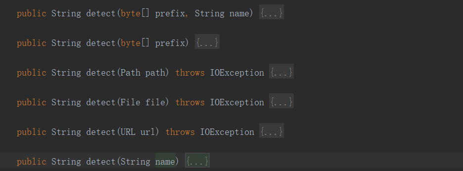

Tika支持MIME所提供的所有互联网媒体文件类型。每当一个文件通过Tika检测到该文件，其文件类型。检测的介质类型，Tika内部通过以下机制。
多用途Internet邮件扩展(MIME)标准，用于识别文件类型的最佳标准。这些标准的知识有助于在内部相互作用的浏览器。
当浏览器遇到一个媒体文件，它选择可用它来显示其内容的兼容软件。在情况下，它不具有任何合适的应用程序，以运行一个特定媒体文件，它建议用户获得合适的插件软件。
facade类的detect() 方法被用于检测文档类型。这个方法接受一个文件作为输入。
下面显示的是文件类型检测与Tika外观类的示例程序。
@Test
public void getImageToJPEG() {
try {
File file = new File("C:\\Users\\hww\\Downloads\\0855fde2df59fa4fe9427e78d773dde5.jpeg");
Tika tika = new Tika();
String fileType = tika.detect(file);
System.out.println(fileType);//image/jpeg
} catch (IOException e) {
e.printStackTrace();
}
}输出结果
image/jpeg @Test
public void getImageToJPG() {
try {
Tika tika = new Tika();
String fileType = tika.detect("C:\\Users\\hww\\Downloads\\95a59c718b2575fdbccf66924c14fcd5.jpg");
System.out.println(fileType);//image/jpeg
} catch (Exception e) {
e.printStackTrace();
}
}输入结果：
image/jpeg